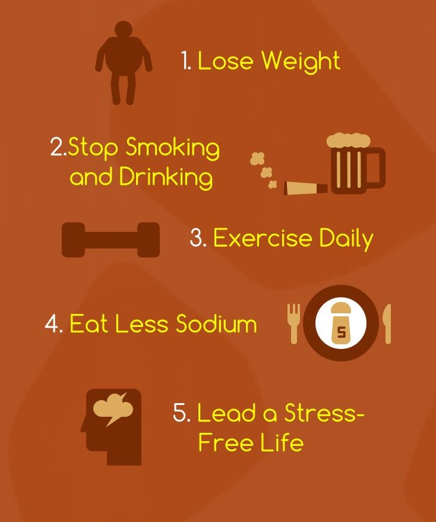

High Blood Pressure Prevention

About 1 in every 4 American adults has high blood pressure, also called hypertension, which is a major risk factor for heart and kidney diseases, stroke, and heart failure. High blood pressure is especially dangerous because it often gives no warning signs or symptoms. Fortunately, you can find out if you have high blood pressure by having your blood pressure checked regularly. If it is high, you can take steps to lower it. Just as important, if your blood pressure is normal, you can learn how to keep it from rising.
How Can I Prevent High Blood Pressure?
You can prevent high blood pressure by:
Maintaining a healthy weight
Being overweight can make you two to six times more likely to develop high blood pressure than if you are at your desirable weight. Even small amounts of weight loss can make a big difference in helping to prevent and treat high blood pressure.
Getting regular exercise
People who are physically active have a lower risk of getting high blood pressure -- 20% to 50% lower -- than people who are not active. You don't have to be a marathon runner to benefit from physical activity. Even light activities, if done daily, can help lower your risk.
Reducing salt intake
Often, when people with high blood pressure cut back on salt, their blood pressure falls. Cutting back on salt also prevents blood pressure from rising.
Drinking alcohol in moderation, if at all
Drinking too much alcohol can raise your blood pressure. To help prevent high blood pressure, limit how much alcohol you drink to no more than two drinks a day. The "Dietary Guidelines for Americans" recommends that for overall health, women should limit their alcohol to no more than one drink a day.
Reduce stress
Stress can make blood pressure go up, and over time may contribute to the cause of high blood pressure. There are many steps you can take to reduce your stress. The article on easing stress will get you started.
Other nutrients may also help prevent high blood pressure. Here's a roundup of the research:
Potassium
Eating foods rich in potassium will help protect some people from developing high blood pressure. You probably can get enough potassium from your diet, so a supplement isn't necessary (and could be dangerous without a doctor's oversight). Many fruits, vegetables, dairy foods, and fish are good sources of potassium.
Calcium
Populations with low calcium intakes have high rates of high blood pressure. However, it has not been proven that taking calcium tablets will prevent high blood pressure. But it is important to be sure to get at least the recommended amount of calcium -- 1,000 milligrams per day for adults 19 to 50 years old and 1,200 mg for those over 50 (pregnant and breastfeeding women also need more) -- from the foods you eat.
Dairy foods like low-fat milk, yogurt, and cheese are good sources of calcium. Low-fat and nonfat dairy products have even more calcium than the high-fat types.
Magnesium
A diet low in magnesium may make your blood pressure rise. But doctors don't recommend taking extra magnesium to help prevent high blood pressure -- the amount you get in a healthy diet is enough. Magnesium is found in whole grains, green leafy vegetables, nuts, seeds, and dry peas and beans.
Fish oils
A type of fat called "omega-3 fatty acids" is found in fatty fish like mackerel and salmon. Large amounts of fish oils may help reduce high blood pressure, but their role in prevention is unclear.
Taking fish oil pills is not routinely recommended, primarily because it is unclear whether supplements can make a difference; getting omega 3’s as part of a heart healthy diet is best. Most fish, if not fried or made with added fat, is low in saturated fat and calories and can be eaten often.
Garlic
There has been some evidence to suggest garlic’s effect in lowering blood pressure, in addition to improving cholesterol and reducing some cancers. Further research is being conducted to fully assess garlic’s potential health benefits.
Always talk to your doctor before taking a dietary supplement or alternative herbal treatment. Some may interact with other medications you may be taking or have harmful side effects.